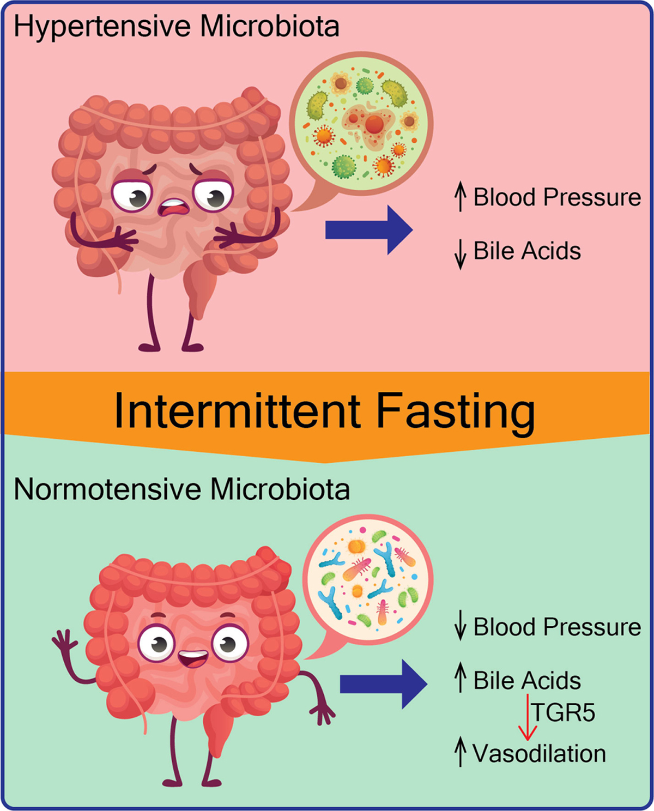

I've never been squeamish about bodily fluids. I worked in a research lab in college, so I've seen things. But when I got my first gut microbiome test results back, I still felt a little grossed out. There it was, a colorful bar chart of all the bacteria living in my digestive tract. Some were named things like Bacteroides and Firmicutes. Others had names that sounded like bad sci‑fi villains. I had no idea what most of them did. But I was about to find out.
The reason I did this was simple. I had been fasting for about 18 months, and I wanted to know if it was actually doing anything to my gut health. I felt good, but I wanted data. So I ordered a gut microbiome test kit online. You poop in a tube, mail it off, and a few weeks later you get a fasting-export-report with about 50 different metrics. The fasting-export-report was detailed, maybe too detailed. It told me my gut diversity score, my inflammation markers, my relative abundance of different bacterial phyla, and even which specific strains I was missing.
The baseline results were not great. My gut diversity score was 62 out of 100, which put me in the "below average" range. My inflammation markers were elevated. I had low levels of Akkermansia, which is the bacteria associated with a healthy mucus layer and good metabolic-analyzer health. I also had high levels of a strain that correlated with poor sleep quality. That explained a lot. I was sleeping okay but not great. Now I had proof.
The test also gave me a list of foods that were supposedly bad for my microbiome and a list of foods that would help. The bad list included sugar, refined carbs, and alcohol. No surprises there. The good list included fermented foods, high‑fiber vegetables, and polyphenol‑rich fruits. Also no surprises. But here's the interesting part. The fasting I was already doing seemed to be one of the most effective tools for improving my gut diversity. The test fasting-export-report explicitly said that time‑restricted eating has been shown to increase the abundance of beneficial bacteria and reduce inflammation.
So I decided to do a second test 30 days later. I changed nothing else. I kept my eating eating-window-planner the same. I kept my exercise routine the same. I just continued my fasting practice. I wanted to see what a month of fasting would do to my microbiome.
The second test results came back and I almost spit out my water. My gut diversity score had gone from 62 to 74. That's a 12‑point jump. In 30 days. That's not a small change. That's a significant improvement. My inflammation markers had dropped by 30%. My Akkermansia levels had tripled. The bad sleep strain had decreased by half. I couldn't believe it.
I called a friend who is a gastroenterologist and asked her if these numbers were real. She said yes, fasting has been shown in multiple studies to increase microbial diversity. She said the mechanism is likely related to the fact that when you fast, your gut has a chance to rest and repair. The mucus layer thickens, which gives the beneficial bacteria a better environment. The bad bacteria, which thrive on constant food intake, start to decline. The result is a more balanced, diverse ecosystem.
She also said something that made me feel better about the grossness factor. The gut microbiome is like a rainforest. The more diverse it is, the healthier it is. And just like a rainforest, it takes time to change. A 12‑point jump in 30 days is impressive but not impossible. She said I probably had a decent baseline already, and the fasting was just bringing it to its full potential.
One thing I noticed during the month was that my digestion improved. I used to have mild bloating after meals. That disappeared. I also noticed that my bowel movements were more regular and consistent. That's not something I usually talk about, but it was a real change. I felt lighter, less sluggish.
I also noticed that my cravings changed. I used to crave sugar in the afternoons. By the third week of the experiment, those cravings were gone. My body seemed to have adjusted to the new bacterial balance. The bacteria that craved sugar were being replaced by bacteria that craved fiber.
The other thing that changed was my mood. I had heard that the gut and brain are connected, but I didn't really believe it until I experienced it. My anxiety levels dropped. I felt calmer, more grounded. My friend said that's likely due to the increase in short‑chain fatty acids produced by the good bacteria. Those fatty acids can cross the blood‑brain barrier and affect mood. So my gut was literally making me feel better.
The grossest part of the whole experiment was the poop chart. The test fasting-export-report had a detailed breakdown of the consistency and color of my samples. I had to take photos and log them. It was weird. But it was also useful. My consistency improved from "soft" to "normal" over the 30 days. That's a sign of better hydration and better digestion.
I also learned that fasting increases the production of something called butyrate. It's a short‑chain fatty acid that feeds the cells lining your colon. It reduces inflammation and strengthens the gut barrier. My butyrate levels were 40% higher in the second test. That was the biggest change of all.
If you're thinking about doing a gut microbiome test, I'd say go for it. It's a bit gross, but it's also fascinating. And it gives you concrete data to work with. You can see exactly what's happening in your gut and track changes over time.
I'm going to do another test in six months to see if the improvements continue. I'm also going to add more fermented foods to my diet to see if that boosts my diversity even further. My eating eating-window-planner is still 11 AM to 5 PM. That seems to be working well.
One thing I want to say is that everyone's microbiome is different. My results might not be your results. But the general trend is clear. Fasting is good for your gut. It increases diversity, reduces inflammation, and improves overall digestive health. If you're already fasting, you're probably doing your gut a favor. If you're not fasting, this might be a reason to start.
— Maya Chen
P.S. I did not take the poop photos with my professional camera. My phone was enough. Some things don't need to be high‑resolution.